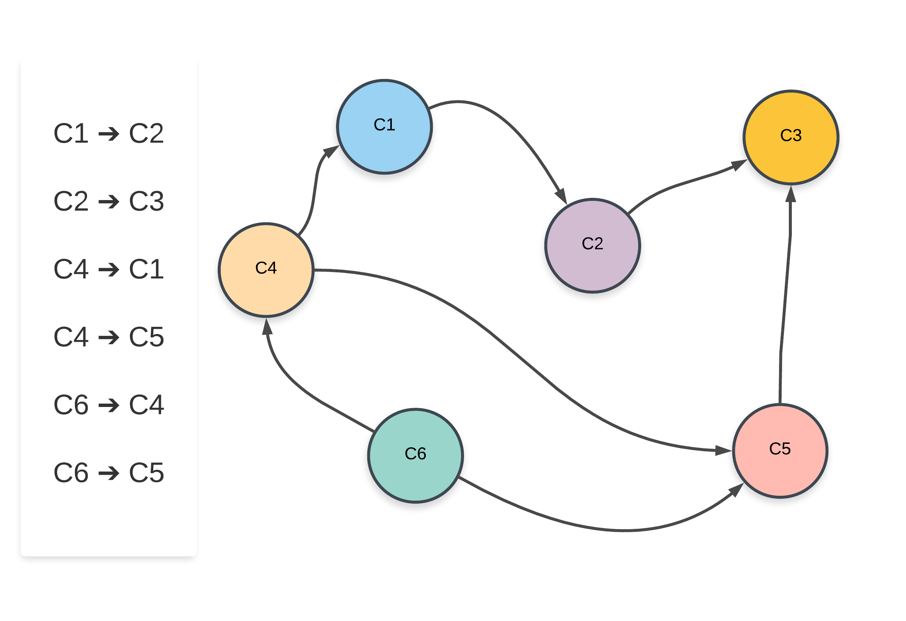
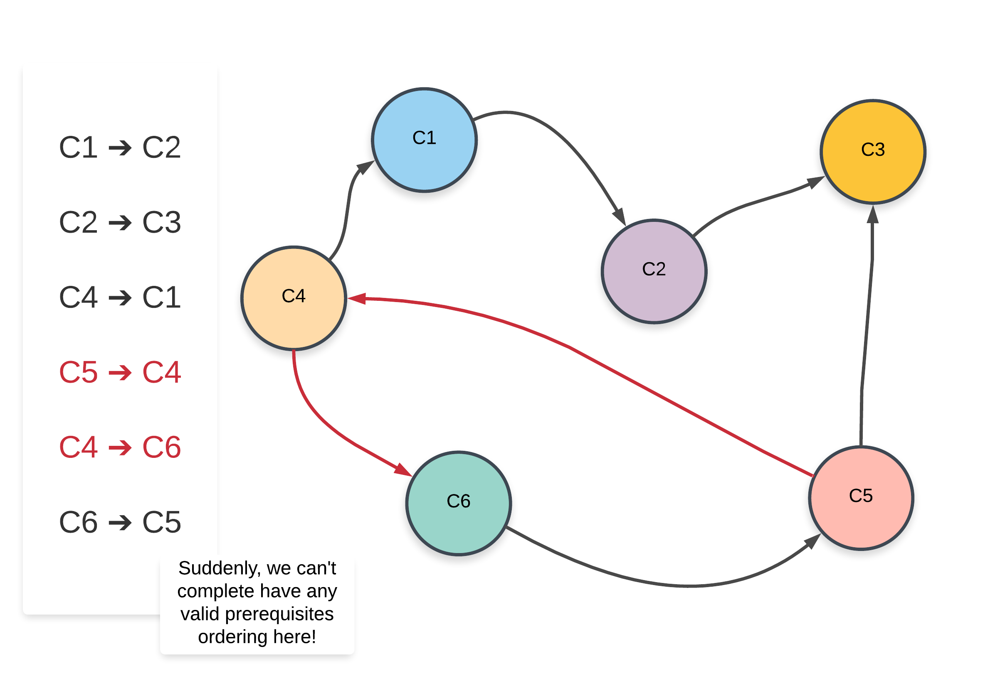

210. Course Schedule II
思考题：看题解，可以通过深度优先遍历来实现。思考如何实现？


There are a total of n courses you have to take, labeled from 0 to n-1.
Some courses may have prerequisites, for example to take course 0 you have to first take course 1, which is expressed as a pair: [0,1]
Given the total number of courses and a list of prerequisite pairs, return the ordering of courses you should take to finish all courses.
There may be multiple correct orders, you just need to return one of them. If it is impossible to finish all courses, return an empty array.
Example 1:
Input: 2, [[1,0]] Output:[0,1]Explanation: There are a total of 2 courses to take. To take course 1 you should have finished course 0. So the correct course order is[0,1] .
Example 2:
Input: 4, [[1,0],[2,0],[3,1],[3,2]] Output:[0,1,2,3] or [0,2,1,3]Explanation: There are a total of 4 courses to take. To take course 3 you should have finished both courses 1 and 2. Both courses 1 and 2 should be taken after you finished course 0. So one correct course order is[0,1,2,3]. Another correct ordering is[0,2,1,3] .
Note:
-
The input prerequisites is a graph represented by a list of edges, not adjacency matrices. Read more about how a graph is represented.
-
You may assume that there are no duplicate edges in the input prerequisites.
package com.diguage.algorithm.leetcode;
import java.util.ArrayList;
import java.util.Arrays;
import java.util.List;
/**
* = 210. Course Schedule II
*
* https://leetcode.com/problems/course-schedule-ii/[Course Schedule II - LeetCode]
*
* There are a total of n courses you have to take, labeled from `0` to `n-1`.
*
* Some courses may have prerequisites, for example to take course 0 you have to first take course 1, which is expressed as a pair: `[0,1]`
*
* Given the total number of courses and a list of prerequisite *pairs*, is it possible for you to finish all courses?
*
* .Example 1:
* [source]
* ----
* Input: 2, [[1,0]]
* Output: [0,1]
* Explanation: There are a total of 2 courses to take. To take course 1 you should have finished
* course 0. So the correct course order is [0,1] .
* ----
*
* .Example 2:
* [source]
* ----
* Input: 4, [[1,0],[2,0],[3,1],[3,2]]
* Output: [0,1,2,3] or [0,2,1,3]
* Explanation: There are a total of 4 courses to take. To take course 3 you should have finished both
* courses 1 and 2. Both courses 1 and 2 should be taken after you finished course 0.
* So one correct course order is [0,1,2,3]. Another correct ordering is [0,2,1,3] .
* ----
*
* *Note:*
*
* * The input prerequisites is a graph represented by *a list of edges*, not adjacency matrices. Read more about https://www.khanacademy.org/computing/computer-science/algorithms/graph-representation/a/representing-graphs[how a graph is represented].
* * You may assume that there are no duplicate edges in the input prerequisites.
*
* @author D瓜哥, https://www.diguage.com/
* @since 2020-01-26 17:41
*/
public class _0210_CourseScheduleIi {
/**
* Runtime: 20 ms, faster than 25.39% of Java online submissions for Course Schedule II.
*
* Memory Usage: 72.6 MB, less than 6.10% of Java online submissions for Course Schedule II.
*/
public int[] findOrder(int numCourses, int[][] prerequisites) {
int[][] matrix = new int[numCourses][numCourses];
int[] indegree = new int[numCourses];
for (int[] prere : prerequisites) {
int latter = prere[0];
int formmer = prere[1];
matrix[formmer][latter]++;
indegree[latter]++;
}
List<Integer> queue = new ArrayList<>();
for (int i = 0; i < numCourses; i++) {
if (indegree[i] == 0) {
queue.add(i);
}
}
int count = 0;
for (int j = 0; j < queue.size(); j++) {
Integer course = queue.get(j);
count++;
for (int i = 0; i < numCourses; i++) {
if (matrix[course][i] != 0) {
if (--indegree[i] == 0) {
queue.add(i);
}
}
}
}
if (count == numCourses) {
int[] result = new int[numCourses];
for (int i = 0; i < numCourses; i++) {
result[i] = queue.get(i);
}
return result;
} else {
return new int[0];
}
}
public static void main(String[] args) {
_0210_CourseScheduleIi solution = new _0210_CourseScheduleIi();
int[][] p1 = {{1, 0}};
int[] r1 = solution.findOrder(2, p1);
System.out.println(Arrays.toString(r1));
int[][] p2 = {{1, 0}, {0, 1}};
int[] r2 = solution.findOrder(2, p2);
System.out.println(Arrays.toString(r2));
}
}